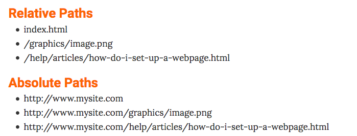

Sectionslist
Links
- Color palettes
- Box shadow
- Gradient Generator
- Pattern Generator
- Clipping mask
- bennettfeely (støtter ikke IE og Firefox)
- cssplant
- HTML entity
- Viewport resizer
- bradfrost "Ish 2.0"
- Responsinator
- Johnpolacec "Responsivator"
- mattkersley
- resize.11hundred
- responsivepx
- beta.screenqueri
- quirktools "screenfly"
- juicecreative
- ami.responsivedesign
- morganesque
- #
- #
- #
- #
- #
- #
HTML entities
spesielle symboler. © & copy.
charset utf8 er de latinske bokstavene. standard for web.
begynner med en & og slutter med en ;
for å skrive en mindre enn karakter som skal vises, kan man ikke bruke den vanlige knappene. da blir det feil. kan tro at man begynner på en tag
for å skrive mindre enn, altså ikke ved bruk av tekst, men med entitie: < <
html entities
<< mindre enn>> større enn# ## Hashtag # Hashtag;; semikolon©© (c)•• dot♥♥♩♩♫♫∧∧ opphøyd☎☎&&øø ø-bokstavåå å-bokstavææ æ-bokstav­ orddeling strek
I HTML, det eneste stedet det er forskjell mellom stor og liten bokstav er når det er oslash tegnet: ø ø, Oslash: Ø Ø
Blockquote
blablablablablalbalbalba
– Baldrian
unordered lists, ordered lists, definition lists, nested lists
- unordered lists:
ul, li: er en liste med bullets - ordered lists:
ol, li: er liste med nummere - definition list:
dl, dt og dd: ikke tall, men key og en verdi - nested lists:
lister inne i lister
unordered lists
ul, li, liste med bullets
ordered lists
ol, li, liste med nummere
definition lists
dl, dt og dd, ikke tall, men key og en verdi
nested lists
ul inne i en li, et nytt innrykk
lililimedulilili
limedulilililimedulilililimeduli- a
- e
- i
- o
li
li
li
anchor elements
<a href="adresselinje" title="description">klika her</a>
for å navigere en mappe opp, bruk to punktum. navigeringen inne i href=" " er en path
lenke til noe innover en mappe: a href"mappenavn/filnavn" navn /a
lenke til noe utover en mappe: a href"../filnavn"
images
img src="imagesmappe"
alt="beskrivelse"
title="beskrivelse"
width="300"
forminsk bildet til nettleseren i photoshop, for at nettleser skal slippe å ha det store bildet. Dette finjusteres (mindre) i css. eller HTML (!!)

Classing
tagnname="propertie-name" /tagname
section class="" id="" /section
abbr title="propertie-name" prof /abbr. propertie-name
Det har ikke noe å si hvilke anførselstegn som blir brukt, bare bruk de samme.
En kan ha så mange properties som mulig og rekkefølgen spiller ikke noe rolle.
hvert element kan ha så mange class som mulig. hvis css kode er har .redcolor .fullwidth .center så kan et div element ha flere class div="redcolor fullwidth center"
Hyberlinks/paths
Se anchor section id for paths
Absolute og relative paths. kilde:
Absolute paths
full url. lenke til et sted på internett, (eller navigering i den lokale mappa? ifølge den siden). starter med /
En lenke til <a href=
En lenke til Nettserier.
En lenke til <img
En lenke til 
Relative paths
Ikke full URL. lenke til et sted i den lokale mappa di, en side i sia di
En lenke til <a href=
En lenke til en ikke-eksisterende underside Undereside som ikke finnes
Targeting hyperlinks
Når en lenke trykkes, skal den nye siden komme opp som nytt browser-vindu, ny fane, erstatte den du ser på,
<a href= ny fane
<a href= samme vindu (Vanling oppførsel)
<a href= åpner lenke på parent vindu, eller samme vindu (_self)
<a href= mye det samme som _self, åpne i samme vindu
a href="https://nettserier.no/" target="framenavn"/a frame navn
Cascading Style Sheets
<style> </style> i HTML i head gjør at man kan skrive css i HTML.
em er antall hundre prosent font-sizen skal bli |større|
Css selectors
Universal = Gjelder alle elementer → Stjerne → * {}
til bruk hvis man vil resete alle preseter
Type / Comma separator = Gjelder følgende element også → Komma-mellomrom → h1, h2, h3, … {}
Element tag = Gjelder dette elementet → Elementnavn → body {} h1 {} p {}
Class = Gjelder class med navn → Punktum → .section {}
ID = Gjelder ID med navn → Hashtag → #cssselectors {}
Child = Første direkte barna Størreenn-li → #section2>li {}
Adjacent sibling = De første barna
General sibling = Alle søsken
Numberal systems
- Decimal
- Binary
- Hexadecimal
THE BOX MODEL
alle elementer på en side. tenke på dem som en boks. en boks har fire isder. har en side som er top, right, bottom og left. det er en border. margin utenfor, padding innenfor.

BOX DIMENTIONS
div {
height: 300px;
width: 400px;
}
p {
height: 75%;
width: 75%;
dersom denne paragraph ligger inne i div-en, er den 75% av 300px, høyden til div-en
}
LIMITING WIDTH
minstebredde min-width
Pageflow
Når elementer i koder dukker opp etter hverandre i nettleser automatisk. En div som kommer etter en annen div (div1) i en kode, vil dukke opp under diven (div1) i koden
Display & visibility
Display og visibility blandes ofte.
Display: none;
På Display velger man ógom det skal være block-element eller inline-element. –Eller om den skal være borte. display: none;. FJERNER elementet, det som kommer etterpå, vil ta dens plass. Det fjernete elementet tar ikke noe plass. Det er borte.
Visibility: hidden;
Visibility Dette gjør elementet usynlig, men forsvinner ikke. Den tar fortsatt opp plass.
Css position
position: fixed;
position: fixed; gjør at et element blir et sted. Den har en posisjon i forhold til wievportet.
Man må fortelle hvor den hvor den skal henge:fra toppen av nettleseren: top:200px. Dette har ingenting med flow å gjøre. skrive hvor mange pixeler fra en side et element skal være
position: relative;
position: relative; gjør den til at den står hvor den er som deafult. Når man endrer posisjon skriver man til pixelverdi avstand – fra der den automatisk vil være. left: 100px vil si at elementet skal være 100px fra dens deafult/automatiske/normale posisjon. Brukes for små endriger.
position: absolute;
position: absolute; gjør at element er posisjonert relative til dens første forelder som ikke er static, eller er body
er du noe annet enn static, hvis static, da bryr jeg meg ikke om deg. hvis body eller noe annet, henger jeg meg på det.
prosentlendge blir da av den dette absolute elementet reagerer på.
div
relative
static
absolute
Viewport
Viewport width = Vw. Viewport height = Wh.
Bruk viewport width (vw) til navigasjon og diver som ikke rer innne i foreldre. Prosent (%) setter lengden som prosentandel av forelder-elementet.
pixeler bruker man på veldig små ting.
Tekst med line-heigt samme som høyde på en boks, sentreres vertikalt.
Viewport lengde forholder seg til skjermstørrelse, prosent lengde forholder seg til lengden på forelder-boksen
Tables
Tabeller skal inneholde data. før i tiden ble det brukt til å designe nettsider, men det er vanskelig å få dem til å endre seg på forskjellig skjermer. forskjellige devices viser tabeller ulike. tabeller må bare brukes til å vise data.
user agent identifiserer hva slags software det er. for å vise hva en browser gjør automatisk med semantiske ekementer. som at th blir bold
<tr> Table row. <td> Table data. <th> Table heading.
none breaking space. nettlseren forstår at det skal være en mellomrom her. En tom plass.
| table heading | table heading | table heading | table heading |
|---|---|---|---|
| table data | table data | table data | table data |
| table data | table data | table data | table data |
| table data | table data | table data | table data |
<td colspan="#"> colspan er hvor mange kolonner en celle skal ta. <td rowspan="#"> rowspan er hvor mange rader en celle skal ta. Da må også de cellene de overskrider fjernes, slik at det ikke skjer noe utseendemessig i tabellen når cella utvider seg.
<caption> i <table>. caption legger til en slags tittel eller beskrivelse til tabellen.
| table heading colspan="4" | |||
|---|---|---|---|
| data rowspan="3" | data | data | data |
| data | data | data | |
| data | data | data | |
pseudo-classes
Hva slags stil et element skal ha i et spesielt state. bruker når man bil referere til states. f.eks. anchor.
:first-child first child første barn av andre elementer skal bli stylet
:last-child siste barna av et element
:nth-child(value) har å gjøre med element som er barn av andre element. Kan brukes til å lage bakgrunn for annenhver rad i en tabell: tr:nth-child(even) for partallradervalg, tr:nth-child(odd) for oddetallradervalg eller tr:nth-child(3) hvert tredje eller et annet nummer.
:first-letter første bokstav.
Float
Floating elements. kontrollering av posisjonering av elementer. hvordan elementer skal komme seg ut av flow-en. til venstre eller høyre.
kjsnfius dfnsifnkfnds fndifndfn difndfin dfidnfidnf njnfsnfksnf knkjsd j fks dfjk dfkdsgkdg ksgj gks gkfgksjgksnio gfsjif oigj soig osj gros jogros kjsnfiusdfnsifn kfndsfndifndfndifnd findfid nfidnfnjnfsn fksnfknkjsd jfks dfjk dfkdsgkdg ksgj gks gkfgksjgksnio gfsjif oigj soig osj gros jogros
Text-align justify pluss floating gir nettside litt bokinnside-preg.
Float med block-elementer gjør at de legger seg ved siden av hverandre
Clear betyr å fjerne den floaten den refererer til. Hvis du har e telement som floater left kan du bruke clear left til å fjerne float leften.
Kan bruke nth-child til å gi float egenskap til hver #-te element. Her har alle de svarte boksene clear: left;
Floatede elementer dytter ikke ut området. de kommer seg ut.
Flexboks kan styre med layout bedre. skal ikke se på dette her.
med en <br class="clearboth"> etter de flytende elementene, og en class i css som sier at classen skal ha clear both. .clearboth { clear: both; }, trekker boksen (div/secitonen den er plassert i) de flytende elementene inn igjen. Clearfix skrives etter elementene, før boksen lukkes.
Responsive Deign
Nettside ser bra ut på hvilken som helst skjerm. Design må være universell utfformet, tilpasset alle skjermer, oppløsning. Responsive, responderer til devices. Universal Design.
Media breakpoints / @media rule
Beskriver et vist view. Skjermstørrelse påvirker nettside. Fortelle nettside at den skal oppføre seg annerledes. @media rule. brukes for å si at denne css skal påvirke denne skjermstørrelsen.
@media screen and (min-width: 480px) {
body {
background-color: lightgreen;
}
}
Bootrap 3 Media Query Breakpoints
scotch.io| Mobile | Custom, iPhone Retina | Extra small devices, Phones | Small Devises, Tablets | Medium devices, Desktops | Large device, Wide screens |
|---|---|---|---|---|---|
| alt over null | 320px | 480px | 768px | 992px | 1200px |
Flexbox
Flexbox layout module
Før brukte vi tabeller til å lage layout. 100% høyde ganger bredde. brukes for å vise data. Floats kom, og kunne bli applied til block elementer som -div-. Float er laget for å wrappe tekst rundt bilde. til layout.
The flexbox model
flex-container. main axis, cross axis. main start. main end. cross start. cross end. når man plasserer et item inne i blir det e t flex-item. kan ha main size og cross size.
div="flex-container" med noen diver inni. alle divene vil stable seg oppå hverandre. I Css med .flex-container display: flex; alle elementene (divene) på rekke og på rad. display: -webkit-flex; /*Safari*/
Flex-direction
flex-direction kan sette flexen til en main eller cross, venstrejustert eller høyrejustert. main er vertikal. cross blir horisontal. i Css flex-direction: row; eller row-reverse;. flex-direction: collumn; eller collumn-reverse. row er deafult.
flex-flow: row wrap; justify content: space-around; align-items: baseline; align-content: center;
Align items
Vertikalt
Align content
Horisontalt
flex-start sender alt til taket. flex-end sender alt til bunn. flex center sender alt til midten. TÆFT! flexslid
en av divene/boksene flexitemorder1. I Css .flexitemorder1 { order: 1;} og så videre med 2 og 3. Justify content: center
flex-grow
Hvor stor elemenetene er i forhold til andre. flex-shrink blir motsatt.
Sencoding emmet, brackets shortcuts
sparer mye tid
! tab
main tab
. tab
.container>h2
> er barn, + er ved siden av
kopiere linje. control D.
kopiere linje. control D.
kopiere linje. control D.
kopiere linje. control D.
kopiere linje. control D.
kopiere linje. control D.
control B for å velge alle neste.
control shift A. for å lage en forelder div.
css animate
.animate tab
transitions
transition: all 2s linear;
animation: rainbow (navn)
keyframes: rainbow {
from {
background-color: red;}
to { background-color: black;}
}
0% {
background-color: red;}
transform: translatex(-50%) translate(-50%)
svg live animations
auto prefxer
gridsystem
.row {
width: 100%;
float:left;}
.col-1 {
width:25%;
}
.col-2 {
width:50%;
}
.col-3 {
width:75%;
}
.col-4 {
width:100%;
}
Lag diver med classer i html for classene i css
media queries. tablet. max-width: 768px
bootstrap, rammeverk
bootstrap er en verktøyskasse, samling av komponenter som vi ofte ser på nett. meny, navigasjonsbar, ting som man bruker over alt. ferdige komponenter. themes, fonts.
getbootstrap.com > geting started > hvis man vet at man alltid har internett kan man bruke B CDN. men: > laste ned bibliotek og legge ved zip fil mappe ved index.html >. får bootstrap theme.css. alle theme har en min komprimert versjon og en utvidet. > bootstrap sin css mappe skal ha egen css mappe, skla ikke være bootstrap css i vanlig css mappe. hvis man tar online lenking så plasser lenke under en jquery
får gratis hele responsive, men må vite hvordan media queries fungerer sånn at ma kan redigere.
jquery, også verktøykasse. kan lastes ned eller lenkes.
Basic template
hente greier til nettside. components. glyph icon mellomrom. > how to use, bruke span tag > gi span tag den class som er beskrevet i koden. > ikke skriv noe inni span tagen.
Symbolet kan være omsluttet av en button.
Dropdowns. div class dropdown må hete dropdown. kan legge inn li role="seperator" class="divider" for å få skillestrek i menyen.
hvis dette går på vanlig nettleser, trenger man ikke ARIA. men hvis man bruker noe spesiell nettlseser som hjelper folk med å bruke den.
sizing. lg=large md=medium xs=extra small. endrer størrelse på knapp ved å legge til class btn-lg
Breadcrumps. order list. lenker som viser hvor du er i hierakriet i netsiden.
Badges. beskjeer, messeges.
jumbotron. headeren til en side.
primary, info, succes, warning, danger. classes.